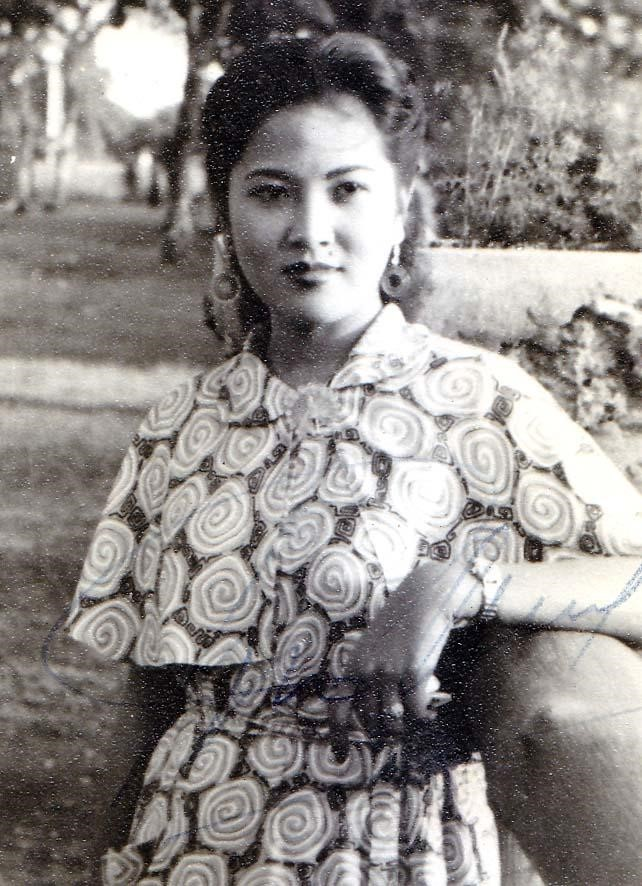
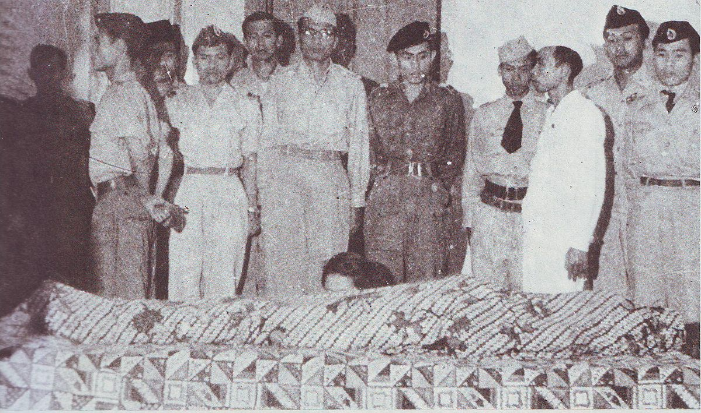
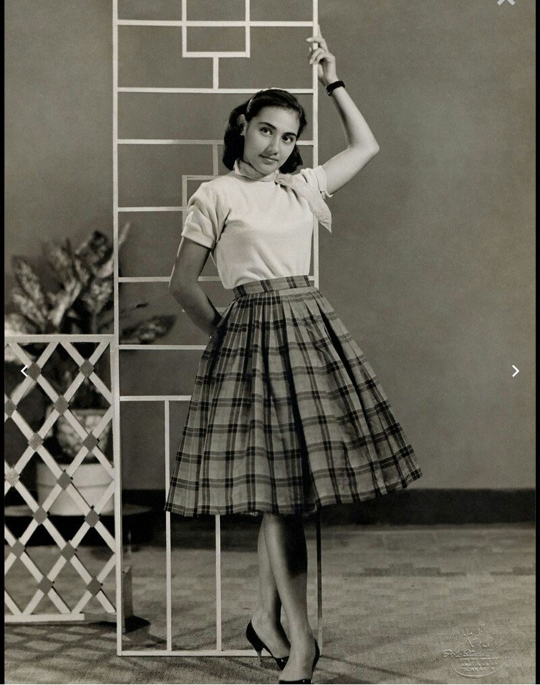

kemunculan desainer senior Peter Sie ke dunia fashion Indonesia merubah tren fashion yang ada. Pada tahun ini, fashion di Indonesia juga banyak terpengaruh oleh fashion dunia. Pada masa ini, gaya "new look" telah meresap ke mana-mana termasuk di Indonesia. Desainnya yang kebanyakan bergaris A-Line, membuat tampilan menjadi lebih edgy.

Pajang.5 Kala

Pajang.6 Kala

Pajang.7 Kala
* KEMBALI *
Usai perang dunia, wanita kembali ke peran utama sebagai ibu rumah tangga sehingga mendatangkan gairah untuk kembali berdandan. Atasan yang dikenakan dengan rok A-line lebar, dikenakan bersama aksesori tas, sarung tangan, dan sepatu warna sepadan.
Tahun 50an, Fashion Pria dihiasi dengan berkembangnya pakaian yang lebih urban namun tetap modis. Fashion saat itu dipengaruhi oleh lagu-lagu Elvis Presley yang bernuansa Rock n Roll. Fashion celana panjang ketat tapi cutbray dibagian bawah, kaos oblong plus jaket kulit, biasanya kerah bajunya dinaikkan ke atas menutup leher, kancing yang terbuka. Dan tak lupa aksesoris, kacamata besar berwarna hitam.